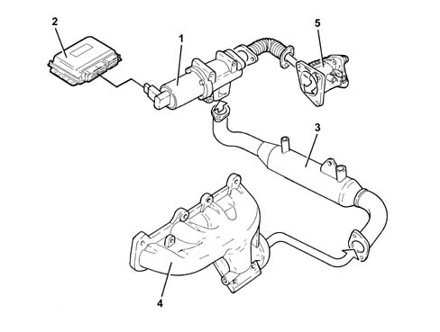
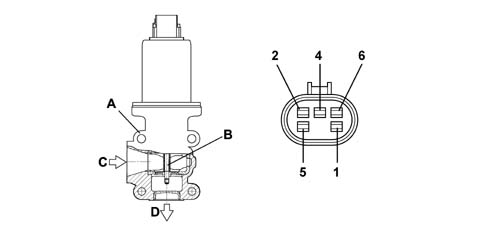

1080C EXHAUST GAS RECIRCULATION SYSTEM (E.G.R.)
- Path
- Descriptions > 10 ENGINE UNIT > 1080 EXHAUST EMISSION CONTROL SYSTEM > 1080C EXHAUST GAS RECIRCULATION SYSTEM (E.G.R.)
- Kind
- system description
- Applies to
- engines: 1.9 JTD 16V; all production periods
- Interactive page
- https://sloeber94.github.io/elrnDB-aGt/en/#/125000301
Applies to: engines: 1.9 JTD 16V; all production periods
CONSTRUCTION SPECIFICATIONS
This system makes it possible to send some (5 - 15%) of the exhaust gases to the intake in certain operating conditions.
This lowers the peak temperature in the combustion chamber restricting the formation of nitrogen oxides (NOx).
The E.G.R. solenoid valve (1) operated by the injection control unit (2) carries out the task of reintroducing some of the exhaust gases taken from the exhaust manifold (4) back into the engine intake.
A heat exchanger (3) allows the partial cooling of the exhaust gases further lowering the temperature of the combustion chamber.

1 - EGR solenoid
2 - Injection control unit
3 - Heat exchanger
4 - Exhaust manifold
5 - Throttle body
OPERATION
At coolant temperatures of > 20°C with the engine speed between 800 and 3000 rpm, the injection control unit operates the E.G.R. solenoid valve with a square wave signal.
The variation in this signal allows the E.G.R. coil to move a shutter, thereby regulating the flow of exhaust gases from the exhaust manifold to the intake manifold; there are two results:
- less air is introduced;
- the combustion temperature is reduced (on account of the presence of inert gases) resulting in a decrease in the formation of NOx (nitrogen oxides).
The injection control unit is constantly informed of the quantity of gas recirculated through the information coming from the flow meter: in effect, if there is an intake of a certain quantity of air (Qam) for a given engine speed and the value sent by the flow meter (Qar) is lower, then the difference (Qgr) is the value for the quantity of gas recirculated
Qam - Qar = Qgr
Qam - Theoretical quantity of air memorized
Qar - Actual quantity of air
Qgr - Quantity of recirculated gas
The atmospheric pressure signal is used for the operation of the E.G.R. solenoid valve to recognize the condition of driving at altitude in order to reduce the quantity of gas recirculated and to prevent engine fumes.
DESCRIPTION OF COMPONENTS
E.G.R. SOLENOID VALVE
The Pierburg E.G.R. solenoid valve, fitted on the intake manifold, has the task of modulating the flow of exhaust gases to the intake according to the command from the injection control unit.
This modulation takes place by means of the internal solenoid, with PWM operation by the control unit, which activates the control rod via the internal valve.

A - E.G.R. valve casing
B - Internal valve
C - Gas intake from exhaust manifold
D - Gas outlet to intake manifold
1 - Solenoid positive
2 - Potententiometer power supply 5V
4 - Potentiometer negative
5 - Solenoid negative
6 - Potentiometer position signal